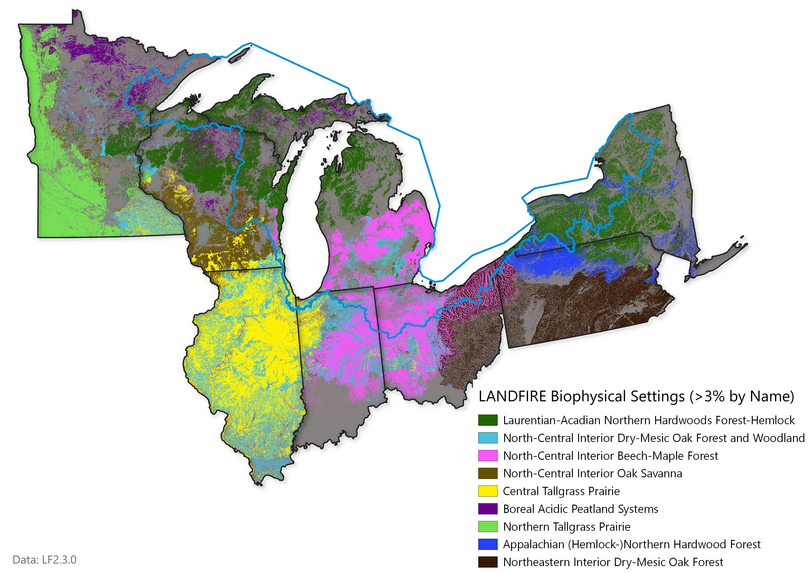

Past: Historical Ecosystems
LANDFIRE’s Biophysical Settings (BpSs)
BpS models represent the vegetation system that may have been dominant on the landscape prior to Euro-American settlement. These models are based on a combination of the current environment and an approximation of the historical disturbance regime. Read more.
Check out this 3-minute tutorial for a quick refresher on the basics of Biophysical Settings Models.
Use this page as a starting point to explore the most prevalent BpSs in the SRFSN Colorado Plateau Subregion. In addition to the charts and maps, the historical disturbance data can be directly accessed using this site.
Summary
- Prior to European colonization, the most dominant vegetation system for the Wyoming Sagebrush Subregion was Colorado Plateau Pinyon-Juniper Woodland.
- Historically, this system experienced ~58,000 acres of fire annually across the subregion historically.
- The Rocky Mountain Montane Riparian Systems had the most disturbance annually with substantial amounts of ‘wind/weather/stress’.
Scroll down to explore the “historical disturbances per ecosystem” using the interactive web app.
Most Prevalent Biophysical Settings

Historic Annual Acres Burned (per ecosystem)

Top Historical Fire Regimes

Historical Disturbances (per ecosystem)
Data Table
| BPS_CODE | ZONE | BPS_MODEL | BPS_NAME | GROUPVEG | FRI_REPLAC | FRI_MIXED | PRC_SURFAC | BLUE | ACRES | REL_PERCENT |
|---|---|---|---|---|---|---|---|---|---|---|
| 14,210 | 49 | 14210_49_52 | Central Tallgrass Prairie | Grassland | 4 | -9,999 | -9,999 | 0.768627 | 22,339,347 | 8.2 |
| 13,100 | 49 | 13100_49 | North-Central Interior Dry-Mesic Oak Forest and Woodland | Hardwood | 75 | 47 | 56 | 0.870588 | 12,132,414 | 4.4 |
| 13,130 | 52 | 13130_49_52_62 | North-Central Interior Beech-Maple Forest | Hardwood | 1,026 | -9,999 | 55 | 0.172549 | 9,957,870 | 3.6 |
| 11 | 0 | 0 | Open Water | Open Water | -9,999 | -9,999 | -9,999 | 1.000000 | 8,110,312 | 3.0 |
| 14,200 | 39 | 14200_39_40_42 | Northern Tallgrass Prairie | Grassland | 6 | -9,999 | -9,999 | 0.113725 | 7,709,758 | 2.8 |
| 13,030 | 61 | 13030_61_63_64_65_66 | Northeastern Interior Dry-Mesic Oak Forest | Hardwood | 39 | 24 | 63 | 0.392157 | 7,523,215 | 2.8 |
| 13,020 | 63 | 13020_63 | Laurentian-Acadian Northern Hardwoods Forest | Hardwood | 2,021 | -9,999 | -9,999 | 0.000000 | 7,531,096 | 2.8 |
| 13,940 | 50 | 13940_50_51 | North-Central Interior Oak Savanna | Hardwood | 66 | 184 | 90 | 0.541176 | 7,351,216 | 2.7 |
| 13,030 | 62 | 13030_62 | Northeastern Interior Dry-Mesic Oak Forest | Hardwood | 39 | 52 | 74 | 0.392157 | 7,403,035 | 2.7 |
| 13,130 | 51 | 13130_47_50_51 | North-Central Interior Beech-Maple Forest | Hardwood | 1,004 | -9,999 | 55 | 0.172549 | 6,839,766 | 2.5 |
| 13,020 | 64 | 13020_64 | Laurentian-Acadian Northern Hardwoods Forest | Hardwood | 2,108 | -9,999 | -9,999 | 0.000000 | 5,656,207 | 2.1 |
| 13,100 | 52 | 13100_52 | North-Central Interior Dry-Mesic Oak Forest and Woodland | Hardwood | 75 | 47 | 56 | 0.870588 | 5,467,763 | 2.0 |
| 13,022 | 51 | 13022_41_50_51 | Laurentian-Acadian Northern Hardwoods Forest-Hemlock | Hardwood | 2,040 | -9,999 | -9,999 | 0.000000 | 5,256,252 | 1.9 |
| 13,022 | 50 | 13022_41_50_51 | Laurentian-Acadian Northern Hardwoods Forest-Hemlock | Hardwood | 2,040 | -9,999 | -9,999 | 0.000000 | 4,963,888 | 1.8 |
| 13,700 | 63 | 13700_60_63_64_65_66 | Appalachian (Hemlock-)Northern Hardwood Forest | Hardwood | 1,010 | 1,122 | -9,999 | 0.568627 | 4,960,184 | 1.8 |
| 14,770 | 41 | 14770_40_41_50_51 | Boreal Acidic Peatland Systems | Riparian | 716 | -9,999 | 85 | 0.541176 | 4,498,421 | 1.6 |
| 14,200 | 40 | 14200_39_40_42 | Northern Tallgrass Prairie | Grassland | 6 | -9,999 | -9,999 | 0.113725 | 4,161,994 | 1.5 |
| 14,810 | 51 | 14810_41_50_51_63 | Laurentian-Acadian Alkaline Conifer-Hardwood Swamp | Riparian | 989 | -9,999 | -9,999 | 1.000000 | 3,774,997 | 1.4 |
| 13,022 | 41 | 13022_41_50_51 | Laurentian-Acadian Northern Hardwoods Forest-Hemlock | Hardwood | 2,040 | -9,999 | -9,999 | 0.000000 | 3,469,406 | 1.3 |
| 13,660 | 64 | 13660_51_63_64_65_66 | Laurentian-Acadian Pine-Hemlock-Hardwood Forest | Hardwood-Conifer | 482 | 998 | 53 | 0.388235 | 3,604,508 | 1.3 |
| 13,022 | 50 | 13022_41_50_51 | Laurentian-Acadian Northern Hardwoods Forest-Hemlock | Hardwood | 2,040 | -9,999 | -9,999 | 0.588235 | 3,203,820 | 1.2 |
| 13,653 | 41 | 13653_41 | Boreal White Spruce-Fir-Hardwood Forest-Aspen-Birch | Conifer | 112 | 243 | -9,999 | 0.568627 | 3,283,653 | 1.2 |
| 13,620 | 51 | 13620_51_63_64_65_66 | Laurentian-Acadian Northern Pine(-Oak) Forest | Hardwood-Conifer | 309 | 447 | 73 | 0.749020 | 3,184,171 | 1.2 |
| 13,210 | 47 | 13210_47_48_53_57 | South-Central Interior Mesophytic Forest | Hardwood | 869 | 534 | 79 | 0.580392 | 3,319,265 | 1.2 |
| 13,651 | 41 | 13651_40_41_50 | Boreal White Spruce-Fir-Hardwood Forest-Inland | Conifer | 250 | 1,468 | -9,999 | 0.447059 | 2,895,201 | 1.1 |
| 13,140 | 41 | 13140_38_39_40_41_42_43_44_50 | North-Central Interior Maple-Basswood Forest | Hardwood | 1,027 | -9,999 | 54 | 0.400000 | 2,707,709 | 1.0 |
| 13,130 | 62 | 13130_49_52_62 | North-Central Interior Beech-Maple Forest | Hardwood | 1,026 | -9,999 | 55 | 0.172549 | 2,789,195 | 1.0 |
| 13,170 | 62 | 13170_62 | Allegheny-Cumberland Dry Oak Forest and Woodland | Hardwood | 37 | 117 | 72 | 0.580392 | 2,709,164 | 1.0 |
| 14,072 | 41 | 14072_41_50_51 | Laurentian Pine-Oak Barrens-Jack Pine | Conifer | 25 | 46 | 48 | 0.392157 | 2,456,590 | 0.9 |
| 14,200 | 41 | 14200_41 | Northern Tallgrass Prairie | Grassland | 4 | -9,999 | -9,999 | 0.113725 | 2,364,096 | 0.9 |
| 13,022 | 51 | 13022_41_50_51 | Laurentian-Acadian Northern Hardwoods Forest-Hemlock | Hardwood | 2,040 | -9,999 | -9,999 | 0.588235 | 2,324,979 | 0.9 |
| 13,690 | 63 | 13690_60_61_63_64_65_66 | Central Appalachian Dry Oak-Pine Forest | Hardwood-Conifer | 182 | 463 | 89 | 0.862745 | 2,193,930 | 0.8 |
| 13,622 | 41 | 13622_41_50 | Laurentian-Acadian Northern Pine(-Oak) Forest-Pine Dominated | Hardwood-Conifer | 230 | -9,999 | 85 | 0.498039 | 2,164,248 | 0.8 |
| 14,770 | 50 | 14770_40_41_50_51 | Boreal Acidic Peatland Systems | Riparian | 716 | -9,999 | 85 | 0.541176 | 2,018,444 | 0.7 |
| 13,940 | 41 | 13940_39_40_41 | North-Central Interior Oak Savanna | Hardwood | 550 | 165 | 96 | 0.541176 | 1,981,375 | 0.7 |
| 13,100 | 51 | 13100_51 | North-Central Interior Dry-Mesic Oak Forest and Woodland | Hardwood | 161 | 160 | 88 | 0.870588 | 1,965,862 | 0.7 |
| 13,660 | 51 | 13660_51_63_64_65_66 | Laurentian-Acadian Pine-Hemlock-Hardwood Forest | Hardwood-Conifer | 482 | 998 | 53 | 0.388235 | 1,924,156 | 0.7 |
| 13,030 | 60 | 13030_60 | Northeastern Interior Dry-Mesic Oak Forest | Hardwood | 7 | 17 | 25 | 0.392157 | 1,981,434 | 0.7 |
| 13,050 | 47 | 13050_47_48 | Southern Interior Low Plateau Dry-Mesic Oak Forest | Hardwood | 6 | 199 | 20 | 0.129412 | 1,943,239 | 0.7 |
| 13,100 | 42 | 13100_38_42_43 | North-Central Interior Dry-Mesic Oak Forest and Woodland | Hardwood | 126 | 50 | 32 | 0.870588 | 2,002,513 | 0.7 |
| 13,622 | 50 | 13622_41_50 | Laurentian-Acadian Northern Pine(-Oak) Forest-Pine Dominated | Hardwood-Conifer | 230 | -9,999 | 85 | 0.498039 | 1,897,793 | 0.7 |
| 13,140 | 50 | 13140_38_39_40_41_42_43_44_50 | North-Central Interior Maple-Basswood Forest | Hardwood | 1,027 | -9,999 | 54 | 0.400000 | 1,702,169 | 0.6 |
| 14,210 | 50 | 14210_31_38_42_43_44_50_51 | Central Tallgrass Prairie | Grassland | 4 | -9,999 | -9,999 | 0.768627 | 1,665,377 | 0.6 |
| 13,100 | 41 | 13100_41_62 | North-Central Interior Dry-Mesic Oak Forest and Woodland | Hardwood | 74 | 56 | 58 | 0.870588 | 1,587,484 | 0.6 |
| 13,950 | 51 | 13950_51 | North-Central Oak Barrens | Hardwood | 49 | 180 | 87 | 0.690196 | 1,693,986 | 0.6 |
| 13,690 | 64 | 13690_60_61_63_64_65_66 | Central Appalachian Dry Oak-Pine Forest | Hardwood-Conifer | 182 | 463 | 89 | 0.862745 | 1,628,070 | 0.6 |
| 13,140 | 49 | 13140_49 | North-Central Interior Maple-Basswood Forest | Hardwood | 1,030 | -9,999 | 55 | 0.400000 | 1,540,177 | 0.6 |
| 13,130 | 47 | 13130_47_50_51 | North-Central Interior Beech-Maple Forest | Hardwood | 1,004 | -9,999 | 55 | 0.172549 | 1,645,306 | 0.6 |
| 13,651 | 51 | 13651_51 | Boreal White Spruce-Fir-Hardwood Forest-Inland | Conifer | 490 | 524 | -9,999 | 0.447059 | 1,268,936 | 0.5 |
| 14,770 | 51 | 14770_40_41_50_51 | Boreal Acidic Peatland Systems | Riparian | 716 | -9,999 | 85 | 0.541176 | 1,391,795 | 0.5 |
| 14,790 | 63 | 14790_60_61_63_64_65_66 | Central Interior and Appalachian Swamp Systems | Riparian | 1,011 | -9,999 | 43 | 1.000000 | 1,364,390 | 0.5 |
| 13,740 | 64 | 13740_64_65_66 | Acadian-Appalachian Montane Spruce-Fir Forest | Hardwood-Conifer | 580 | -9,999 | -9,999 | 0.709804 | 1,248,922 | 0.5 |
| 13,110 | 52 | 13110_52 | North-Central Interior Dry Oak Forest and Woodland | Hardwood | 149 | 151 | 88 | 0.560784 | 1,310,356 | 0.5 |
| 14,710 | 47 | 14710_47_48_53_54_57_59_60_61_63 | Central Interior and Appalachian Floodplain Systems | Riparian | 613 | 392 | 66 | 0.690196 | 1,498,137 | 0.5 |
| 14,810 | 50 | 14810_41_50_51_63 | Laurentian-Acadian Alkaline Conifer-Hardwood Swamp | Riparian | 989 | -9,999 | -9,999 | 1.000000 | 1,157,824 | 0.4 |
| 15,170 | 50 | 15170_42_49_50 | Paleozoic Plateau Bluff and Talus | Hardwood-Conifer | 15 | 126 | 12 | 0.000000 | 1,135,860 | 0.4 |
| 14,810 | 41 | 14810_41_50_51_63 | Laurentian-Acadian Alkaline Conifer-Hardwood Swamp | Riparian | 989 | -9,999 | -9,999 | 1.000000 | 1,150,401 | 0.4 |
| 14,940 | 41 | 14940_41_50_51 | Laurentian-Acadian Shrub-Herbaceous Wetland Systems | Riparian | 18 | -9,999 | -9,999 | 0.419608 | 982,445 | 0.4 |
| 14,071 | 51 | 14071_41_50_51 | Laurentian Pine-Oak Barrens | Hardwood-Conifer | 109 | 75 | 90 | 0.000000 | 1,044,271 | 0.4 |
| 14,710 | 51 | 14710_51_62 | Central Interior and Appalachian Floodplain Systems | Riparian | -9,999 | 429 | 86 | 0.690196 | 1,117,938 | 0.4 |
| 13,700 | 61 | 13700_53_61_62 | Appalachian (Hemlock-)Northern Hardwood Forest | Hardwood | 1,036 | 1,083 | -9,999 | 0.568627 | 963,320 | 0.4 |
| 14,720 | 63 | 14720_61_62_63 | Central Interior and Appalachian Riparian Systems | Riparian | 1,001 | -9,999 | 83 | 0.078431 | 1,061,204 | 0.4 |
| 13,210 | 62 | 13210_62 | South-Central Interior Mesophytic Forest | Hardwood | 960 | 798 | 56 | 0.580392 | 1,227,524 | 0.4 |
| 14,710 | 62 | 14710_51_62 | Central Interior and Appalachian Floodplain Systems | Riparian | -9,999 | 429 | 86 | 0.690196 | 970,566 | 0.4 |
| 13,690 | 65 | 13690_60_61_63_64_65_66 | Central Appalachian Dry Oak-Pine Forest | Hardwood-Conifer | 182 | 463 | 89 | 0.862745 | 1,018,875 | 0.4 |
| 13,700 | 64 | 13700_60_63_64_65_66 | Appalachian (Hemlock-)Northern Hardwood Forest | Hardwood | 1,010 | 1,122 | -9,999 | 0.568627 | 1,001,511 | 0.4 |
| 14,720 | 64 | 14720_64_65_66 | Central Interior and Appalachian Riparian Systems | Riparian | 984 | -9,999 | 83 | 0.078431 | 1,070,657 | 0.4 |
| 14,750 | 64 | 14750_41_50_51_63_64_65_66 | Laurentian-Acadian Floodplain Systems | Riparian | -9,999 | 435 | 86 | 0.960784 | 957,831 | 0.4 |
| 14,790 | 52 | 14790_52_62 | Central Interior and Appalachian Swamp Systems | Riparian | 989 | -9,999 | -9,999 | 1.000000 | 1,097,193 | 0.4 |
| 13,210 | 49 | 13210_49 | South-Central Interior Mesophytic Forest | Hardwood | 708 | 809 | 40 | 0.580392 | 1,156,948 | 0.4 |
| 14,210 | 42 | 14210_31_38_42_43_44_50_51 | Central Tallgrass Prairie | Grassland | 4 | -9,999 | -9,999 | 0.768627 | 1,014,915 | 0.4 |
| 13,440 | 41 | 13440_41 | Boreal Jack Pine-Black Spruce Forest | Conifer | 82 | -9,999 | -9,999 | 0.549020 | 769,555 | 0.3 |
| 14,440 | 41 | 14440_41_50_51 | Eastern Boreal Floodplain | Hardwood | -9,999 | 581 | 65 | 0.611765 | 735,780 | 0.3 |
| 13,110 | 51 | 13110_51 | North-Central Interior Dry Oak Forest and Woodland | Hardwood | 137 | 111 | 85 | 0.560784 | 718,800 | 0.3 |
| 13,652 | 51 | 13652_51 | Boreal White Spruce-Fir-Hardwood Forest-Coastal | Conifer | 872 | 1,306 | -9,999 | 0.274510 | 737,847 | 0.3 |
| 13,690 | 60 | 13690_60_61_63_64_65_66 | Central Appalachian Dry Oak-Pine Forest | Hardwood-Conifer | 182 | 463 | 89 | 0.862745 | 726,646 | 0.3 |
| 13,210 | 61 | 13210_61_63 | South-Central Interior Mesophytic Forest | Hardwood | 847 | 573 | 77 | 0.580392 | 892,125 | 0.3 |
| 14,720 | 61 | 14720_61_62_63 | Central Interior and Appalachian Riparian Systems | Riparian | 1,001 | -9,999 | 83 | 0.078431 | 950,999 | 0.3 |
| 14,720 | 62 | 14720_61_62_63 | Central Interior and Appalachian Riparian Systems | Riparian | 1,001 | -9,999 | 83 | 0.078431 | 899,228 | 0.3 |
| 13,620 | 64 | 13620_51_63_64_65_66 | Laurentian-Acadian Northern Pine(-Oak) Forest | Hardwood-Conifer | 309 | 447 | 73 | 0.749020 | 832,590 | 0.3 |
| 14,710 | 52 | 14710_49_52 | Central Interior and Appalachian Floodplain Systems | Riparian | -9,999 | 426 | 86 | 0.690196 | 902,471 | 0.3 |
| 13,140 | 42 | 13140_38_39_40_41_42_43_44_50 | North-Central Interior Maple-Basswood Forest | Hardwood | 1,027 | -9,999 | 54 | 0.400000 | 798,143 | 0.3 |
| 14,200 | 42 | 14200_39_40_42 | Northern Tallgrass Prairie | Grassland | 6 | -9,999 | -9,999 | 0.113725 | 902,336 | 0.3 |
| 13,100 | 50 | 13100_44_50 | North-Central Interior Dry-Mesic Oak Forest and Woodland | Hardwood | 123 | 49 | 32 | 0.870588 | 569,083 | 0.2 |
| 13,660 | 50 | 13660_50 | Laurentian-Acadian Pine-Hemlock-Hardwood Forest | Hardwood-Conifer | 483 | 1,018 | 53 | 0.388235 | 536,123 | 0.2 |
| 13,950 | 50 | 13950_50 | North-Central Oak Barrens | Hardwood | 53 | 143 | 87 | 0.690196 | 662,283 | 0.2 |
| 14,071 | 50 | 14071_41_50_51 | Laurentian Pine-Oak Barrens | Hardwood-Conifer | 109 | 75 | 90 | 0.000000 | 437,227 | 0.2 |
| 14,120 | 50 | 14120_39_40_41_42_43_50_51 | North-Central Interior Sand and Gravel Tallgrass Prairie | Grassland | 4 | -9,999 | 4 | 0.615686 | 489,028 | 0.2 |
| 13,652 | 41 | 13652_41 | Boreal White Spruce-Fir-Hardwood Forest-Coastal | Conifer | 939 | 1,147 | -9,999 | 0.274510 | 565,051 | 0.2 |
| 13,950 | 41 | 13950_41_42_43_49_52 | North-Central Oak Barrens | Hardwood | 341 | 246 | 97 | 0.690196 | 556,342 | 0.2 |
| 14,120 | 41 | 14120_39_40_41_42_43_50_51 | North-Central Interior Sand and Gravel Tallgrass Prairie | Grassland | 4 | -9,999 | 4 | 0.615686 | 670,963 | 0.2 |
| 14,750 | 41 | 14750_41_50_51_63_64_65_66 | Laurentian-Acadian Floodplain Systems | Riparian | -9,999 | 435 | 86 | 0.960784 | 511,258 | 0.2 |
| 14,930 | 41 | 14930_41_42_44_50 | Central Interior and Appalachian Shrub-Herbaceous Wetland Systems | Riparian | 17 | -9,999 | -9,999 | 0.078431 | 579,373 | 0.2 |
| 13,441 | 51 | 13441_51 | Boreal Jack Pine-Black Spruce Forest-Pine Barrens | Conifer | 34 | 64 | 77 | 0.549020 | 655,071 | 0.2 |
| 14,790 | 51 | 14790_41_42_47_48_50_51_53 | Central Interior and Appalachian Swamp Systems | Riparian | 987 | -9,999 | -9,999 | 1.000000 | 636,122 | 0.2 |
| 14,770 | 40 | 14770_40_41_50_51 | Boreal Acidic Peatland Systems | Riparian | 716 | -9,999 | 85 | 0.541176 | 583,076 | 0.2 |
| 14,120 | 39 | 14120_39_40_41_42_43_50_51 | North-Central Interior Sand and Gravel Tallgrass Prairie | Grassland | 4 | -9,999 | 4 | 0.615686 | 437,037 | 0.2 |
| 14,690 | 39 | 14690_31_39_40_43 | Eastern Great Plains Floodplain Systems | Riparian | 517 | 77 | 28 | 0.745098 | 473,938 | 0.2 |
| 13,690 | 61 | 13690_60_61_63_64_65_66 | Central Appalachian Dry Oak-Pine Forest | Hardwood-Conifer | 182 | 463 | 89 | 0.862745 | 625,533 | 0.2 |
| 13,660 | 63 | 13660_51_63_64_65_66 | Laurentian-Acadian Pine-Hemlock-Hardwood Forest | Hardwood-Conifer | 482 | 998 | 53 | 0.388235 | 455,484 | 0.2 |
| 14,750 | 63 | 14750_41_50_51_63_64_65_66 | Laurentian-Acadian Floodplain Systems | Riparian | -9,999 | 435 | 86 | 0.960784 | 487,455 | 0.2 |
| 13,100 | 62 | 13100_41_62 | North-Central Interior Dry-Mesic Oak Forest and Woodland | Hardwood | 74 | 56 | 58 | 0.870588 | 413,161 | 0.2 |
| 13,240 | 65 | 13240_60_65_66 | Northern Atlantic Coastal Plain Hardwood Forest | Hardwood | 48 | 44 | 84 | 0.352941 | 582,464 | 0.2 |
| 13,700 | 65 | 13700_60_63_64_65_66 | Appalachian (Hemlock-)Northern Hardwood Forest | Hardwood | 1,010 | 1,122 | -9,999 | 0.568627 | 412,219 | 0.2 |
| 14,710 | 64 | 14710_64_65 | Central Interior and Appalachian Floodplain Systems | Riparian | 603 | 392 | 66 | 0.690196 | 479,914 | 0.2 |
| 13,940 | 52 | 13940_52 | North-Central Interior Oak Savanna | Hardwood | 552 | 187 | 96 | 0.541176 | 414,181 | 0.2 |
| 13,170 | 53 | 13170_48_53 | Allegheny-Cumberland Dry Oak Forest and Woodland | Hardwood | 91 | 1,199 | 93 | 0.580392 | 562,709 | 0.2 |
| 13,210 | 53 | 13210_47_48_53_57 | South-Central Interior Mesophytic Forest | Hardwood | 869 | 534 | 79 | 0.580392 | 656,973 | 0.2 |
| 14,720 | 47 | 14720_44_46_47_48 | Central Interior and Appalachian Riparian Systems | Riparian | 990 | -9,999 | 83 | 0.078431 | 615,354 | 0.2 |
| 14,790 | 47 | 14790_41_42_47_48_50_51_53 | Central Interior and Appalachian Swamp Systems | Riparian | 987 | -9,999 | -9,999 | 1.000000 | 546,121 | 0.2 |
| 13,620 | 50 | 13620_41_50 | Laurentian-Acadian Northern Pine(-Oak) Forest | Hardwood-Conifer | 355 | 680 | 95 | 0.749020 | 489,400 | 0.2 |
| 13,130 | 50 | 13130_47_50_51 | North-Central Interior Beech-Maple Forest | Hardwood | 1,004 | -9,999 | 55 | 0.172549 | 201,857 | 0.1 |
| 13,651 | 50 | 13651_40_41_50 | Boreal White Spruce-Fir-Hardwood Forest-Inland | Conifer | 250 | 1,468 | -9,999 | 0.447059 | 232,522 | 0.1 |
| 14,072 | 50 | 14072_41_50_51 | Laurentian Pine-Oak Barrens-Jack Pine | Conifer | 25 | 46 | 48 | 0.392157 | 232,899 | 0.1 |
| 14,710 | 50 | 14710_41_50 | Central Interior and Appalachian Floodplain Systems | Riparian | -9,999 | 432 | 86 | 0.690196 | 311,751 | 0.1 |
| 14,750 | 50 | 14750_41_50_51_63_64_65_66 | Laurentian-Acadian Floodplain Systems | Riparian | -9,999 | 435 | 86 | 0.960784 | 181,405 | 0.1 |
| 14,790 | 50 | 14790_41_42_47_48_50_51_53 | Central Interior and Appalachian Swamp Systems | Riparian | 987 | -9,999 | -9,999 | 1.000000 | 334,713 | 0.1 |
| 14,930 | 50 | 14930_41_42_44_50 | Central Interior and Appalachian Shrub-Herbaceous Wetland Systems | Riparian | 17 | -9,999 | -9,999 | 0.078431 | 294,152 | 0.1 |
| 14,940 | 50 | 14940_41_50_51 | Laurentian-Acadian Shrub-Herbaceous Wetland Systems | Riparian | 18 | -9,999 | -9,999 | 0.419608 | 210,152 | 0.1 |
| 13,022 | 41 | 13022_41_50_51 | Laurentian-Acadian Northern Hardwoods Forest-Hemlock | Hardwood | 2,040 | -9,999 | -9,999 | 0.588235 | 386,045 | 0.1 |
| 14,710 | 41 | 14710_41_50 | Central Interior and Appalachian Floodplain Systems | Riparian | -9,999 | 432 | 86 | 0.690196 | 172,818 | 0.1 |
| 14,790 | 41 | 14790_41_42_47_48_50_51_53 | Central Interior and Appalachian Swamp Systems | Riparian | 987 | -9,999 | -9,999 | 1.000000 | 245,251 | 0.1 |
| 13,940 | 51 | 13940_50_51 | North-Central Interior Oak Savanna | Hardwood | 66 | 184 | 90 | 0.541176 | 276,944 | 0.1 |
| 14,110 | 51 | 14110_49_51_52 | Great Lakes Wet-Mesic Lakeplain Prairie | Riparian | 24 | -9,999 | -9,999 | 0.000000 | 142,840 | 0.1 |
| 14,120 | 51 | 14120_39_40_41_42_43_50_51 | North-Central Interior Sand and Gravel Tallgrass Prairie | Grassland | 4 | -9,999 | 4 | 0.615686 | 148,278 | 0.1 |
| 14,210 | 51 | 14210_31_38_42_43_44_50_51 | Central Tallgrass Prairie | Grassland | 4 | -9,999 | -9,999 | 0.768627 | 139,142 | 0.1 |
| 14,750 | 51 | 14750_41_50_51_63_64_65_66 | Laurentian-Acadian Floodplain Systems | Riparian | -9,999 | 435 | 86 | 0.960784 | 258,259 | 0.1 |
| 13,310 | 40 | 13310_39_40_41 | Eastern Great Plains Tallgrass Aspen Parkland | Hardwood | 16 | -9,999 | 65 | 0.000000 | 300,524 | 0.1 |
| 13,940 | 40 | 13940_39_40_41 | North-Central Interior Oak Savanna | Hardwood | 550 | 165 | 96 | 0.541176 | 251,422 | 0.1 |
| 14,120 | 40 | 14120_39_40_41_42_43_50_51 | North-Central Interior Sand and Gravel Tallgrass Prairie | Grassland | 4 | -9,999 | 4 | 0.615686 | 380,824 | 0.1 |
| 14,820 | 40 | 14820_39_40 | Great Plains Prairie Pothole | Grassland | 50 | -9,999 | -9,999 | 0.639216 | 253,603 | 0.1 |
| 13,700 | 60 | 13700_60_63_64_65_66 | Appalachian (Hemlock-)Northern Hardwood Forest | Hardwood | 1,010 | 1,122 | -9,999 | 0.568627 | 223,134 | 0.1 |
| 13,170 | 61 | 13170_57_61 | Allegheny-Cumberland Dry Oak Forest and Woodland | Hardwood | 123 | 59 | 73 | 0.580392 | 249,512 | 0.1 |
| 14,710 | 61 | 14710_47_48_53_54_57_59_60_61_63 | Central Interior and Appalachian Floodplain Systems | Riparian | 613 | 392 | 66 | 0.690196 | 286,330 | 0.1 |
| 13,030 | 63 | 13030_61_63_64_65_66 | Northeastern Interior Dry-Mesic Oak Forest | Hardwood | 39 | 24 | 63 | 0.392157 | 136,752 | 0.1 |
| 14,710 | 63 | 14710_47_48_53_54_57_59_60_61_63 | Central Interior and Appalachian Floodplain Systems | Riparian | 613 | 392 | 66 | 0.690196 | 260,618 | 0.1 |
| 15,180 | 62 | 15180_43_47_49_52_62_63_64_65 | North-Central Interior Wet Flatwoods | Hardwood | 993 | -9,999 | -9,999 | 0.149020 | 198,097 | 0.1 |
| 13,020 | 65 | 13020_65_66 | Laurentian-Acadian Northern Hardwoods Forest | Hardwood | 983 | -9,999 | -9,999 | 0.000000 | 196,517 | 0.1 |
| 13,030 | 65 | 13030_61_63_64_65_66 | Northeastern Interior Dry-Mesic Oak Forest | Hardwood | 39 | 24 | 63 | 0.392157 | 142,979 | 0.1 |
| 14,790 | 65 | 14790_60_61_63_64_65_66 | Central Interior and Appalachian Swamp Systems | Riparian | 1,011 | -9,999 | 43 | 1.000000 | 208,600 | 0.1 |
| 13,030 | 64 | 13030_61_63_64_65_66 | Northeastern Interior Dry-Mesic Oak Forest | Hardwood | 39 | 24 | 63 | 0.392157 | 292,572 | 0.1 |
| 13,730 | 64 | 13730_63_64 | Acadian Low-Elevation Spruce-Fir-Hardwood Forest | Hardwood-Conifer | 1,053 | -9,999 | -9,999 | 0.392157 | 177,590 | 0.1 |
| 13,770 | 64 | 13770_60_61_63_64_65_66 | Central Appalachian Pine-Oak Rocky Woodland | Hardwood-Conifer | 412 | 384 | 4 | 0.301961 | 180,829 | 0.1 |
| 15,180 | 64 | 15180_43_47_49_52_62_63_64_65 | North-Central Interior Wet Flatwoods | Hardwood | 993 | -9,999 | -9,999 | 0.149020 | 305,905 | 0.1 |
| 13,950 | 52 | 13950_41_42_43_49_52 | North-Central Oak Barrens | Hardwood | 341 | 246 | 97 | 0.690196 | 361,708 | 0.1 |
| 14,210 | 52 | 14210_49_52 | Central Tallgrass Prairie | Grassland | 4 | -9,999 | -9,999 | 0.768627 | 355,816 | 0.1 |
| 14,930 | 52 | 14930_52_62 | Central Interior and Appalachian Shrub-Herbaceous Wetland Systems | Riparian | 17 | -9,999 | -9,999 | 0.078431 | 171,994 | 0.1 |
| 15,180 | 52 | 15180_43_47_49_52_62_63_64_65 | North-Central Interior Wet Flatwoods | Hardwood | 993 | -9,999 | -9,999 | 0.149020 | 310,577 | 0.1 |
| 13,050 | 49 | 13050_49 | Southern Interior Low Plateau Dry-Mesic Oak Forest | Hardwood | 61 | 117 | 81 | 0.129412 | 175,324 | 0.1 |
| 13,110 | 49 | 13110_49 | North-Central Interior Dry Oak Forest and Woodland | Hardwood | 149 | 149 | 87 | 0.560784 | 332,802 | 0.1 |
| 14,710 | 49 | 14710_49_52 | Central Interior and Appalachian Floodplain Systems | Riparian | -9,999 | 426 | 86 | 0.690196 | 217,469 | 0.1 |
| 13,100 | 47 | 13100_47 | North-Central Interior Dry-Mesic Oak Forest and Woodland | Hardwood | 162 | 160 | 88 | 0.870588 | 240,615 | 0.1 |
| 13,630 | 47 | 13630_47_53 | Central Interior Highlands Dry Acidic Glade and Barrens | Hardwood | 29 | 16 | 58 | 0.000000 | 141,466 | 0.1 |
| 14,010 | 47 | 14010_43_44_47_48_53 | Central Interior Highlands Calcareous Glade and Barrens | Grassland | 19 | 16 | 61 | 0.078431 | 371,289 | 0.1 |
| 15,180 | 47 | 15180_43_47_49_52_62_63_64_65 | North-Central Interior Wet Flatwoods | Hardwood | 993 | -9,999 | -9,999 | 0.149020 | 347,696 | 0.1 |
| 14,710 | 42 | 14710_42_43 | Central Interior and Appalachian Floodplain Systems | Riparian | -9,999 | -9,999 | -9,999 | 0.690196 | 397,925 | 0.1 |
| 13,620 | 41 | 13620_41_50 | Laurentian-Acadian Northern Pine(-Oak) Forest | Hardwood-Conifer | 355 | 680 | 95 | 0.749020 | 359,791 | 0.1 |
| -1,111 | -1,111 | -1111 | Fill-Not Mapped | Fill-Not Mapped | -9,999 | -9,999 | -9,999 | 0.435294 | 1,964 | 0.0 |
| 31 | 0 | 0 | Barren-Rock/Sand/Clay | Barren-Rock/Sand/Clay | -9,999 | -9,999 | -9,999 | 0.749020 | 24,745 | 0.0 |
| 14,730 | 45 | 14730_45_46_47_98_99 | Gulf and Atlantic Coastal Plain Floodplain Systems | Riparian | 115 | -9,999 | 54 | 0.803922 | 1,116 | 0.0 |
| 14,800 | 45 | 14800_45_98 | Gulf and Atlantic Coastal Plain Swamp Systems | Riparian | 994 | -9,999 | 59 | 0.701961 | 473 | 0.0 |
| 13,110 | 50 | 13110_50 | North-Central Interior Dry Oak Forest and Woodland | Hardwood | 104 | 98 | 72 | 0.560784 | 60,942 | 0.0 |
| 14,090 | 50 | 14090_50_64 | Great Lakes Alvar | Conifer | 439 | 3,247 | -9,999 | 0.458824 | 15,534 | 0.0 |
| 14,440 | 50 | 14440_41_50_51 | Eastern Boreal Floodplain | Hardwood | -9,999 | 581 | 65 | 0.611765 | 12,558 | 0.0 |
| 14,660 | 50 | 14660_50_51 | Great Lakes Wooded Dune and Swale | Riparian | 3,715 | 536 | -9,999 | 0.000000 | 40,920 | 0.0 |
| 14,920 | 50 | 14920_41_50_51_52_63 | Great Lakes Coastal Marsh Systems | Riparian | -9,999 | -9,999 | -9,999 | 0.792157 | 61,615 | 0.0 |
| 13,310 | 41 | 13310_39_40_41 | Eastern Great Plains Tallgrass Aspen Parkland | Hardwood | 16 | -9,999 | 65 | 0.000000 | 101,706 | 0.0 |
| 14,071 | 41 | 14071_41_50_51 | Laurentian Pine-Oak Barrens | Hardwood-Conifer | 109 | 75 | 90 | 0.000000 | 110,777 | 0.0 |
| 14,920 | 41 | 14920_41_50_51_52_63 | Great Lakes Coastal Marsh Systems | Riparian | -9,999 | -9,999 | -9,999 | 0.792157 | 509 | 0.0 |
| 13,023 | 51 | 13023_51 | Laurentian-Acadian Northern Hardwoods Forest-Northern Sugar Maple-Basswood | Hardwood | 1,016 | -9,999 | -9,999 | 0.000000 | 101,825 | 0.0 |
| 13,442 | 51 | 13442_51 | Boreal Jack Pine-Black Spruce Forest-Spruce-Fir | Conifer | 112 | -9,999 | -9,999 | 0.447059 | 67,045 | 0.0 |
| 14,072 | 51 | 14072_41_50_51 | Laurentian Pine-Oak Barrens-Jack Pine | Conifer | 25 | 46 | 48 | 0.392157 | 136,080 | 0.0 |
| 14,440 | 51 | 14440_41_50_51 | Eastern Boreal Floodplain | Hardwood | -9,999 | 581 | 65 | 0.611765 | 90,164 | 0.0 |
| 14,660 | 51 | 14660_50_51 | Great Lakes Wooded Dune and Swale | Riparian | 3,715 | 536 | -9,999 | 0.000000 | 13,844 | 0.0 |
| 14,920 | 51 | 14920_41_50_51_52_63 | Great Lakes Coastal Marsh Systems | Riparian | -9,999 | -9,999 | -9,999 | 0.792157 | 44,330 | 0.0 |
| 14,940 | 51 | 14940_41_50_51 | Laurentian-Acadian Shrub-Herbaceous Wetland Systems | Riparian | 18 | -9,999 | -9,999 | 0.419608 | 2,761 | 0.0 |
| 11,620 | 40 | 11620_31_39_40 | Western Great Plains Floodplain Systems | Riparian | 250 | 94 | 26 | 0.803922 | 139 | 0.0 |
| 13,010 | 40 | 13010_40 | Boreal Aspen-Birch Forest | Conifer | 82 | -9,999 | -9,999 | 0.219608 | 81,593 | 0.0 |
| 13,020 | 40 | 13020_40 | Laurentian-Acadian Northern Hardwoods Forest | Hardwood | 2,109 | -9,999 | -9,999 | 0.000000 | 201 | 0.0 |
| 13,140 | 40 | 13140_38_39_40_41_42_43_44_50 | North-Central Interior Maple-Basswood Forest | Hardwood | 1,027 | -9,999 | 54 | 0.400000 | 118,095 | 0.0 |
| 13,651 | 40 | 13651_40_41_50 | Boreal White Spruce-Fir-Hardwood Forest-Inland | Conifer | 250 | 1,468 | -9,999 | 0.447059 | 25,448 | 0.0 |
| 14,690 | 40 | 14690_31_39_40_43 | Eastern Great Plains Floodplain Systems | Riparian | 517 | 77 | 28 | 0.745098 | 94,725 | 0.0 |
| 14,950 | 40 | 14950_31_39_40 | Western Great Plains Depressional Wetland Systems | Riparian | 20 | -9,999 | -9,999 | 0.611765 | 4,100 | 0.0 |
| 13,100 | 39 | 13100_39 | North-Central Interior Dry-Mesic Oak Forest and Woodland | Hardwood | 112 | 43 | 40 | 0.870588 | 59,546 | 0.0 |
| 13,110 | 39 | 13110_39 | North-Central Interior Dry Oak Forest and Woodland | Hardwood | 77 | 85 | 68 | 0.560784 | 7,828 | 0.0 |
| 13,140 | 39 | 13140_38_39_40_41_42_43_44_50 | North-Central Interior Maple-Basswood Forest | Hardwood | 1,027 | -9,999 | 54 | 0.400000 | 70,894 | 0.0 |
| 13,850 | 39 | 13850_31_39_40_42 | Western Great Plains Wooded Draw and Ravine | Shrubland | 91 | 65 | 14 | 0.000000 | 633 | 0.0 |
| 13,940 | 39 | 13940_39_40_41 | North-Central Interior Oak Savanna | Hardwood | 550 | 165 | 96 | 0.541176 | 36,489 | 0.0 |
| 14,820 | 39 | 14820_39_40 | Great Plains Prairie Pothole | Grassland | 50 | -9,999 | -9,999 | 0.639216 | 108,840 | 0.0 |
| 13,160 | 60 | 13160_60 | Southern Piedmont Mesic Forest | Hardwood | 499 | 355 | 80 | 0.490196 | 433 | 0.0 |
| 13,240 | 60 | 13240_60_65_66 | Northern Atlantic Coastal Plain Hardwood Forest | Hardwood | 48 | 44 | 84 | 0.352941 | 72,728 | 0.0 |
| 13,430 | 60 | 13430_58_60 | Atlantic Coastal Plain Mesic Hardwood Forest | Hardwood | 479 | 382 | 83 | 0.000000 | 60,322 | 0.0 |
| 13,520 | 60 | 13520_53_54_57_59_60_61 | Southern Appalachian Montane Pine Forest and Woodland | Conifer | 88 | 101 | 89 | 0.772549 | 476 | 0.0 |
| 13,550 | 60 | 13550_60_65 | Northern Atlantic Coastal Plain Pitch Pine Barrens | Conifer | 77 | 31 | 65 | 0.321569 | 11,857 | 0.0 |
| 13,680 | 60 | 13680_46_48_54_57_59_60_61 | Southern Piedmont Dry Oak(-Pine) Forest | Hardwood-Conifer | 325 | 235 | 96 | 1.000000 | 3,617 | 0.0 |
| 13,750 | 60 | 13750_60 | Eastern Serpentine Woodland | Hardwood-Conifer | 87 | 56 | 86 | 0.388235 | 1 | 0.0 |
| 13,770 | 60 | 13770_60_61_63_64_65_66 | Central Appalachian Pine-Oak Rocky Woodland | Hardwood-Conifer | 412 | 384 | 4 | 0.301961 | 16,323 | 0.0 |
| 13,790 | 60 | 13790_60_65 | Northern Atlantic Coastal Plain Maritime Forest | Hardwood-Conifer | 74 | 160 | 85 | 0.701961 | 7,438 | 0.0 |
| 14,000 | 60 | 14000_60_61 | Central Appalachian Alkaline Glade and Woodland | Savanna | 5 | 19 | 1 | 0.898039 | 9,176 | 0.0 |
| 14,360 | 60 | 14360_60 | Northern Atlantic Coastal Plain Dune and Swale | Grassland | 8 | 14 | -9,999 | 0.341176 | 838 | 0.0 |
| 14,710 | 60 | 14710_47_48_53_54_57_59_60_61_63 | Central Interior and Appalachian Floodplain Systems | Riparian | 613 | 392 | 66 | 0.690196 | 34,462 | 0.0 |
| 14,720 | 60 | 14720_53_54_57_59_60 | Central Interior and Appalachian Riparian Systems | Riparian | 997 | -9,999 | 83 | 0.078431 | 2,226 | 0.0 |
| 14,730 | 60 | 14730_55_58_60 | Gulf and Atlantic Coastal Plain Floodplain Systems | Riparian | 114 | -9,999 | 53 | 0.803922 | 13,850 | 0.0 |
| 14,740 | 60 | 14740_46_47_48_55_56_58_60_99 | Gulf and Atlantic Coastal Plain Small Stream Riparian Systems | Riparian | 477 | 202 | 52 | 0.921569 | 4,047 | 0.0 |
| 14,790 | 60 | 14790_60_61_63_64_65_66 | Central Interior and Appalachian Swamp Systems | Riparian | 1,011 | -9,999 | 43 | 1.000000 | 9,444 | 0.0 |
| 14,800 | 60 | 14800_46_56_58_60_64_65_66 | Gulf and Atlantic Coastal Plain Swamp Systems | Riparian | -9,999 | -9,999 | 100 | 0.701961 | 5,555 | 0.0 |
| 14,900 | 60 | 14900_60 | Gulf and Atlantic Coastal Plain Tidal Marsh Systems | Riparian | 5 | 294 | -9,999 | 0.000000 | 4,216 | 0.0 |
| 14,980 | 60 | 14980 | Gulf and Atlantic Coastal Plain Sparsely Vegetated Systems | Sparse | -9,999 | -9,999 | -9,999 | 0.219608 | 379 | 0.0 |
| 13,150 | 61 | 13150_48_53_57_59_61 | Southern Appalachian Oak Forest | Hardwood | 604 | 138 | 88 | 0.760784 | 0 | 0.0 |
| 13,180 | 61 | 13180_57_59_61 | Southern and Central Appalachian Cove Forest | Hardwood | 994 | 498 | 77 | 1.000000 | 47,204 | 0.0 |
| 13,200 | 61 | 13200_48_57_61 | Central and Southern Appalachian Montane Oak Forest | Hardwood | 147 | 95 | 64 | 0.705882 | 15,681 | 0.0 |
| 13,400 | 61 | 13400_61 | Appalachian Shale Barrens | Hardwood | -9,999 | 1,025 | -9,999 | 0.611765 | 222 | 0.0 |
| 13,500 | 61 | 13500_61 | Central and Southern Appalachian Spruce-Fir Forest | Conifer | 834 | 12,028 | -9,999 | 0.709804 | 169 | 0.0 |
| 13,520 | 61 | 13520_53_54_57_59_60_61 | Southern Appalachian Montane Pine Forest and Woodland | Conifer | 88 | 101 | 89 | 0.772549 | 2,123 | 0.0 |
| 13,760 | 61 | 13760_48_53_57_61 | Southern Ridge and Valley/Cumberland Dry Calcareous Forest | Hardwood | 187 | 109 | 90 | 0.478431 | 31 | 0.0 |
| 13,770 | 61 | 13770_60_61_63_64_65_66 | Central Appalachian Pine-Oak Rocky Woodland | Hardwood-Conifer | 412 | 384 | 4 | 0.301961 | 3,226 | 0.0 |
| 14,000 | 61 | 14000_60_61 | Central Appalachian Alkaline Glade and Woodland | Savanna | 5 | 19 | 1 | 0.898039 | 41,441 | 0.0 |
| 14,790 | 61 | 14790_60_61_63_64_65_66 | Central Interior and Appalachian Swamp Systems | Riparian | 1,011 | -9,999 | 43 | 1.000000 | 19,965 | 0.0 |
| 13,210 | 63 | 13210_61_63 | South-Central Interior Mesophytic Forest | Hardwood | 847 | 573 | 77 | 0.580392 | 3,063 | 0.0 |
| 13,620 | 63 | 13620_51_63_64_65_66 | Laurentian-Acadian Northern Pine(-Oak) Forest | Hardwood-Conifer | 309 | 447 | 73 | 0.749020 | 38,521 | 0.0 |
| 13,730 | 63 | 13730_63_64 | Acadian Low-Elevation Spruce-Fir-Hardwood Forest | Hardwood-Conifer | 1,053 | -9,999 | -9,999 | 0.392157 | 5,925 | 0.0 |
| 13,770 | 63 | 13770_60_61_63_64_65_66 | Central Appalachian Pine-Oak Rocky Woodland | Hardwood-Conifer | 412 | 384 | 4 | 0.301961 | 13,642 | 0.0 |
| 14,000 | 63 | 14000_63 | Central Appalachian Alkaline Glade and Woodland | Savanna | 5 | 19 | 1 | 0.898039 | 3,995 | 0.0 |
| 14,770 | 63 | 14770_63_64_65_66 | Boreal Acidic Peatland Systems | Riparian | 935 | -9,999 | 85 | 0.541176 | 14,136 | 0.0 |
| 14,810 | 63 | 14810_41_50_51_63 | Laurentian-Acadian Alkaline Conifer-Hardwood Swamp | Riparian | 989 | -9,999 | -9,999 | 1.000000 | 42,617 | 0.0 |
| 14,920 | 63 | 14920_41_50_51_52_63 | Great Lakes Coastal Marsh Systems | Riparian | -9,999 | -9,999 | -9,999 | 0.792157 | 85,368 | 0.0 |
| 14,940 | 63 | 14940_63_65_66 | Laurentian-Acadian Shrub-Herbaceous Wetland Systems | Riparian | 792 | -9,999 | -9,999 | 0.419608 | 58,340 | 0.0 |
| 15,180 | 63 | 15180_43_47_49_52_62_63_64_65 | North-Central Interior Wet Flatwoods | Hardwood | 993 | -9,999 | -9,999 | 0.149020 | 97,291 | 0.0 |
| 13,700 | 62 | 13700_53_61_62 | Appalachian (Hemlock-)Northern Hardwood Forest | Hardwood | 1,036 | 1,083 | -9,999 | 0.568627 | 55,812 | 0.0 |
| 14,790 | 62 | 14790_52_62 | Central Interior and Appalachian Swamp Systems | Riparian | 989 | -9,999 | -9,999 | 1.000000 | 32,151 | 0.0 |
| 14,930 | 62 | 14930_52_62 | Central Interior and Appalachian Shrub-Herbaceous Wetland Systems | Riparian | 17 | -9,999 | -9,999 | 0.078431 | 15,730 | 0.0 |
| 13,550 | 65 | 13550_60_65 | Northern Atlantic Coastal Plain Pitch Pine Barrens | Conifer | 77 | 31 | 65 | 0.321569 | 46,294 | 0.0 |
| 13,620 | 65 | 13620_51_63_64_65_66 | Laurentian-Acadian Northern Pine(-Oak) Forest | Hardwood-Conifer | 309 | 447 | 73 | 0.749020 | 26,090 | 0.0 |
| 13,660 | 65 | 13660_51_63_64_65_66 | Laurentian-Acadian Pine-Hemlock-Hardwood Forest | Hardwood-Conifer | 482 | 998 | 53 | 0.388235 | 129,877 | 0.0 |
| 13,730 | 65 | 13730_65_66 | Acadian Low-Elevation Spruce-Fir-Hardwood Forest | Hardwood-Conifer | 1,127 | -9,999 | -9,999 | 0.392157 | 1,778 | 0.0 |
| 13,740 | 65 | 13740_64_65_66 | Acadian-Appalachian Montane Spruce-Fir Forest | Hardwood-Conifer | 580 | -9,999 | -9,999 | 0.709804 | 4,138 | 0.0 |
| 13,770 | 65 | 13770_60_61_63_64_65_66 | Central Appalachian Pine-Oak Rocky Woodland | Hardwood-Conifer | 412 | 384 | 4 | 0.301961 | 93,765 | 0.0 |
| 13,790 | 65 | 13790_60_65 | Northern Atlantic Coastal Plain Maritime Forest | Hardwood-Conifer | 74 | 160 | 85 | 0.701961 | 2,298 | 0.0 |
| 14,360 | 65 | 14360_65_66 | Northern Atlantic Coastal Plain Dune and Swale | Grassland | 10 | 17 | -9,999 | 0.341176 | 20,363 | 0.0 |
| 14,710 | 65 | 14710_64_65 | Central Interior and Appalachian Floodplain Systems | Riparian | 603 | 392 | 66 | 0.690196 | 23,490 | 0.0 |
| 14,720 | 65 | 14720_64_65_66 | Central Interior and Appalachian Riparian Systems | Riparian | 984 | -9,999 | 83 | 0.078431 | 10,845 | 0.0 |
| 14,750 | 65 | 14750_41_50_51_63_64_65_66 | Laurentian-Acadian Floodplain Systems | Riparian | -9,999 | 435 | 86 | 0.960784 | 7,317 | 0.0 |
| 14,770 | 65 | 14770_63_64_65_66 | Boreal Acidic Peatland Systems | Riparian | 935 | -9,999 | 85 | 0.541176 | 2,842 | 0.0 |
| 14,800 | 65 | 14800_46_56_58_60_64_65_66 | Gulf and Atlantic Coastal Plain Swamp Systems | Riparian | -9,999 | -9,999 | 100 | 0.701961 | 46,135 | 0.0 |
| 14,900 | 65 | 14900_65_66 | Gulf and Atlantic Coastal Plain Tidal Marsh Systems | Riparian | 508 | -9,999 | -9,999 | 0.000000 | 36,184 | 0.0 |
| 14,940 | 65 | 14940_63_65_66 | Laurentian-Acadian Shrub-Herbaceous Wetland Systems | Riparian | 792 | -9,999 | -9,999 | 0.419608 | 55,270 | 0.0 |
| 15,180 | 65 | 15180_43_47_49_52_62_63_64_65 | North-Central Interior Wet Flatwoods | Hardwood | 993 | -9,999 | -9,999 | 0.149020 | 92,367 | 0.0 |
| 15,260 | 65 | 15260_64_65_66 | Laurentian-Acadian Swamp Systems | Riparian | 1,011 | -9,999 | -9,999 | 1.000000 | 36,399 | 0.0 |
| 13,540 | 64 | 13540_64_66 | Northeastern Interior Pine Barrens | Conifer | 77 | 31 | 66 | 0.321569 | 82,740 | 0.0 |
| 13,890 | 64 | 13890_64_66 | Acadian-Appalachian Subalpine Woodland and Heath-Krummholz | Shrubland | 3,351 | 1,795 | 22 | 0.905882 | 61,429 | 0.0 |
| 14,000 | 64 | 14000_64 | Central Appalachian Alkaline Glade and Woodland | Savanna | 5 | 19 | 1 | 0.898039 | 251 | 0.0 |
| 14,090 | 64 | 14090_50_64 | Great Lakes Alvar | Conifer | 439 | 3,247 | -9,999 | 0.458824 | 3,006 | 0.0 |
| 14,770 | 64 | 14770_63_64_65_66 | Boreal Acidic Peatland Systems | Riparian | 935 | -9,999 | 85 | 0.541176 | 60,209 | 0.0 |
| 14,790 | 64 | 14790_60_61_63_64_65_66 | Central Interior and Appalachian Swamp Systems | Riparian | 1,011 | -9,999 | 43 | 1.000000 | 99,681 | 0.0 |
| 14,800 | 64 | 14800_46_56_58_60_64_65_66 | Gulf and Atlantic Coastal Plain Swamp Systems | Riparian | -9,999 | -9,999 | 100 | 0.701961 | 1,197 | 0.0 |
| 14,940 | 64 | 14940_64 | Laurentian-Acadian Shrub-Herbaceous Wetland Systems | Riparian | 794 | -9,999 | -9,999 | 0.419608 | 6,576 | 0.0 |
| 15,260 | 64 | 15260_64_65_66 | Laurentian-Acadian Swamp Systems | Riparian | 1,011 | -9,999 | -9,999 | 1.000000 | 109,650 | 0.0 |
| 14,110 | 52 | 14110_49_51_52 | Great Lakes Wet-Mesic Lakeplain Prairie | Riparian | 24 | -9,999 | -9,999 | 0.000000 | 84,525 | 0.0 |
| 14,120 | 52 | 14120_52 | North-Central Interior Sand and Gravel Tallgrass Prairie | Grassland | 4 | -9,999 | 4 | 0.615686 | 51,734 | 0.0 |
| 14,920 | 52 | 14920_41_50_51_52_63 | Great Lakes Coastal Marsh Systems | Riparian | -9,999 | -9,999 | -9,999 | 0.792157 | 71,322 | 0.0 |
| 13,020 | 66 | 13020_65_66 | Laurentian-Acadian Northern Hardwoods Forest | Hardwood | 983 | -9,999 | -9,999 | 0.000000 | 1,292 | 0.0 |
| 13,540 | 66 | 13540_64_66 | Northeastern Interior Pine Barrens | Conifer | 77 | 31 | 66 | 0.321569 | 8 | 0.0 |
| 13,620 | 66 | 13620_51_63_64_65_66 | Laurentian-Acadian Northern Pine(-Oak) Forest | Hardwood-Conifer | 309 | 447 | 73 | 0.749020 | 151 | 0.0 |
| 13,660 | 66 | 13660_51_63_64_65_66 | Laurentian-Acadian Pine-Hemlock-Hardwood Forest | Hardwood-Conifer | 482 | 998 | 53 | 0.388235 | 52 | 0.0 |
| 13,690 | 66 | 13690_60_61_63_64_65_66 | Central Appalachian Dry Oak-Pine Forest | Hardwood-Conifer | 182 | 463 | 89 | 0.862745 | 7 | 0.0 |
| 13,730 | 66 | 13730_65_66 | Acadian Low-Elevation Spruce-Fir-Hardwood Forest | Hardwood-Conifer | 1,127 | -9,999 | -9,999 | 0.392157 | 556 | 0.0 |
| 13,740 | 66 | 13740_64_65_66 | Acadian-Appalachian Montane Spruce-Fir Forest | Hardwood-Conifer | 580 | -9,999 | -9,999 | 0.709804 | 0 | 0.0 |
| 13,770 | 66 | 13770_60_61_63_64_65_66 | Central Appalachian Pine-Oak Rocky Woodland | Hardwood-Conifer | 412 | 384 | 4 | 0.301961 | 16 | 0.0 |
| 14,750 | 66 | 14750_41_50_51_63_64_65_66 | Laurentian-Acadian Floodplain Systems | Riparian | -9,999 | 435 | 86 | 0.960784 | 80 | 0.0 |
| 14,790 | 66 | 14790_60_61_63_64_65_66 | Central Interior and Appalachian Swamp Systems | Riparian | 1,011 | -9,999 | 43 | 1.000000 | 234 | 0.0 |
| 14,940 | 66 | 14940_63_65_66 | Laurentian-Acadian Shrub-Herbaceous Wetland Systems | Riparian | 792 | -9,999 | -9,999 | 0.419608 | 104 | 0.0 |
| 15,260 | 66 | 15260_64_65_66 | Laurentian-Acadian Swamp Systems | Riparian | 1,011 | -9,999 | -9,999 | 1.000000 | 1,839 | 0.0 |
| 13,050 | 53 | 13050_53 | Southern Interior Low Plateau Dry-Mesic Oak Forest | Hardwood | 2 | 1,007 | 11 | 0.129412 | 10,619 | 0.0 |
| 13,150 | 53 | 13150_48_53_57_59_61 | Southern Appalachian Oak Forest | Hardwood | 604 | 138 | 88 | 0.760784 | 13,548 | 0.0 |
| 13,180 | 53 | 13180_48_53 | Southern and Central Appalachian Cove Forest | Hardwood | 555 | 727 | 78 | 1.000000 | 5,707 | 0.0 |
| 13,530 | 53 | 13530_46_48_53_54_57_59_60_61 | Southern Appalachian Low-Elevation Pine Forest | Conifer | 153 | 66 | 84 | 0.380392 | 5 | 0.0 |
| 13,700 | 53 | 13700_53_61_62 | Appalachian (Hemlock-)Northern Hardwood Forest | Hardwood | 1,036 | 1,083 | -9,999 | 0.568627 | 5,168 | 0.0 |
| 14,010 | 53 | 14010_43_44_47_48_53 | Central Interior Highlands Calcareous Glade and Barrens | Grassland | 19 | 16 | 61 | 0.078431 | 4,994 | 0.0 |
| 14,710 | 53 | 14710_47_48_53_54_57_59_60_61_63 | Central Interior and Appalachian Floodplain Systems | Riparian | 613 | 392 | 66 | 0.690196 | 84,438 | 0.0 |
| 14,720 | 53 | 14720_53_54_57_59_60 | Central Interior and Appalachian Riparian Systems | Riparian | 997 | -9,999 | 83 | 0.078431 | 126,231 | 0.0 |
| 14,790 | 53 | 14790_41_42_47_48_50_51_53 | Central Interior and Appalachian Swamp Systems | Riparian | 987 | -9,999 | -9,999 | 1.000000 | 5,771 | 0.0 |
| 13,040 | 49 | 13040_32_43_44_49 | Ozark-Ouachita Dry-Mesic Oak Forest | Hardwood | 188 | 66 | 77 | 0.000000 | 98,092 | 0.0 |
| 13,130 | 49 | 13130_49_52_62 | North-Central Interior Beech-Maple Forest | Hardwood | 1,026 | -9,999 | 55 | 0.172549 | 30,899 | 0.0 |
| 13,260 | 49 | 13260_49 | South-Central Interior/Upper Coastal Plain Flatwoods | Hardwood | 128 | 33 | 61 | 0.149020 | 848 | 0.0 |
| 13,640 | 49 | 13640_32_44_49 | Ozark-Ouachita Dry Oak Woodland | Hardwood | 38 | 89 | 82 | 0.000000 | 84,954 | 0.0 |
| 13,940 | 49 | 13940_44_49 | North-Central Interior Oak Savanna | Hardwood | 550 | 189 | 96 | 0.541176 | 18,632 | 0.0 |
| 13,950 | 49 | 13950_41_42_43_49_52 | North-Central Oak Barrens | Hardwood | 341 | 246 | 97 | 0.690196 | 370 | 0.0 |
| 14,010 | 49 | 14010_49 | Central Interior Highlands Calcareous Glade and Barrens | Grassland | 19 | 16 | 61 | 0.078431 | 45,350 | 0.0 |
| 14,110 | 49 | 14110_49_51_52 | Great Lakes Wet-Mesic Lakeplain Prairie | Riparian | 24 | -9,999 | -9,999 | 0.000000 | 726 | 0.0 |
| 14,120 | 49 | 14120_49 | North-Central Interior Sand and Gravel Tallgrass Prairie | Grassland | 4 | -9,999 | 4 | 0.615686 | 20,239 | 0.0 |
| 14,570 | 49 | 14570_49 | South-Central Interior/Upper Coastal Plain Wet Flatwoods | Hardwood | 93 | 120 | 80 | 0.149020 | 6,636 | 0.0 |
| 14,660 | 49 | 14660_49 | Great Lakes Wooded Dune and Swale | Riparian | 2,663 | 533 | -9,999 | 0.000000 | 103,571 | 0.0 |
| 14,690 | 49 | 14690_38_42_49 | Eastern Great Plains Floodplain Systems | Riparian | 510 | 76 | 27 | 0.745098 | 98,813 | 0.0 |
| 14,720 | 49 | 14720_49 | Central Interior and Appalachian Riparian Systems | Riparian | 996 | -9,999 | 83 | 0.078431 | 6,591 | 0.0 |
| 15,170 | 49 | 15170_42_49_50 | Paleozoic Plateau Bluff and Talus | Hardwood-Conifer | 15 | 126 | 12 | 0.000000 | 823 | 0.0 |
| 15,180 | 49 | 15180_43_47_49_52_62_63_64_65 | North-Central Interior Wet Flatwoods | Hardwood | 993 | -9,999 | -9,999 | 0.149020 | 117,714 | 0.0 |
| 13,100 | 43 | 13100_38_42_43 | North-Central Interior Dry-Mesic Oak Forest and Woodland | Hardwood | 126 | 50 | 32 | 0.870588 | 4 | 0.0 |
| 13,140 | 43 | 13140_38_39_40_41_42_43_44_50 | North-Central Interior Maple-Basswood Forest | Hardwood | 1,027 | -9,999 | 54 | 0.400000 | 1 | 0.0 |
| 13,950 | 43 | 13950_41_42_43_49_52 | North-Central Oak Barrens | Hardwood | 341 | 246 | 97 | 0.690196 | 7 | 0.0 |
| 14,010 | 43 | 14010_43_44_47_48_53 | Central Interior Highlands Calcareous Glade and Barrens | Grassland | 19 | 16 | 61 | 0.078431 | 0 | 0.0 |
| 14,210 | 43 | 14210_31_38_42_43_44_50_51 | Central Tallgrass Prairie | Grassland | 4 | -9,999 | -9,999 | 0.768627 | 39 | 0.0 |
| 14,690 | 43 | 14690_31_39_40_43 | Eastern Great Plains Floodplain Systems | Riparian | 517 | 77 | 28 | 0.745098 | 25 | 0.0 |
| 14,710 | 43 | 14710_42_43 | Central Interior and Appalachian Floodplain Systems | Riparian | -9,999 | -9,999 | -9,999 | 0.690196 | 846 | 0.0 |
| 14,880 | 43 | 14880_38_42_43 | Eastern Great Plains Wet Meadow-Prairie-Marsh | Grassland | 3 | -9,999 | -9,999 | 0.200000 | 29 | 0.0 |
| 15,180 | 43 | 15180_43_47_49_52_62_63_64_65 | North-Central Interior Wet Flatwoods | Hardwood | 993 | -9,999 | -9,999 | 0.149020 | 2 | 0.0 |
| 13,060 | 47 | 13060_47_48 | East Gulf Coastal Plain Northern Loess Plain Oak-Hickory Upland | Hardwood | 386 | 87 | 88 | 0.670588 | 26 | 0.0 |
| 13,260 | 47 | 13260_47 | South-Central Interior/Upper Coastal Plain Flatwoods | Hardwood | 187 | 182 | 94 | 0.149020 | 22,154 | 0.0 |
| 13,530 | 47 | 13530_47 | Southern Appalachian Low-Elevation Pine Forest | Conifer | 100 | 1,204 | 97 | 0.380392 | 15,471 | 0.0 |
| 13,570 | 47 | 13570_46_47_55_58_99 | Southern Coastal Plain Mesic Slope Forest | Hardwood | 402 | 159 | 69 | 0.278431 | 2 | 0.0 |
| 14,130 | 47 | 14130_47 | Bluegrass Savanna and Woodland | Hardwood | 81 | 132 | 45 | 0.580392 | 14,668 | 0.0 |
| 14,180 | 47 | 14180_47 | Pennyroyal Karst Plain Prairie and Barrens | Grassland | 2 | 75 | 7 | 0.541176 | 782 | 0.0 |
| 14,570 | 47 | 14570_47_48 | South-Central Interior/Upper Coastal Plain Wet Flatwoods | Hardwood | 189 | 118 | 89 | 0.149020 | 1,535 | 0.0 |
| 14,730 | 47 | 14730_45_46_47_98_99 | Gulf and Atlantic Coastal Plain Floodplain Systems | Riparian | 115 | -9,999 | 54 | 0.803922 | 207 | 0.0 |
| 15,090 | 47 | 15090_45_47 | Mississippi River Alluvial Plain Dry-Mesic Loess Slope Forest | Hardwood | 479 | 106 | 49 | 0.321569 | 128 | 0.0 |
| 13,110 | 42 | 13110_42_43 | North-Central Interior Dry Oak Forest and Woodland | Hardwood | 141 | 111 | 85 | 0.560784 | 40,489 | 0.0 |
| 13,850 | 42 | 13850_31_39_40_42 | Western Great Plains Wooded Draw and Ravine | Shrubland | 91 | 65 | 14 | 0.000000 | 26,208 | 0.0 |
| 13,940 | 42 | 13940_42 | North-Central Interior Oak Savanna | Hardwood | 530 | 167 | 96 | 0.541176 | 51,164 | 0.0 |
| 13,950 | 42 | 13950_41_42_43_49_52 | North-Central Oak Barrens | Hardwood | 341 | 246 | 97 | 0.690196 | 4,487 | 0.0 |
| 14,120 | 42 | 14120_39_40_41_42_43_50_51 | North-Central Interior Sand and Gravel Tallgrass Prairie | Grassland | 4 | -9,999 | 4 | 0.615686 | 41,899 | 0.0 |
| 14,690 | 42 | 14690_38_42_49 | Eastern Great Plains Floodplain Systems | Riparian | 510 | 76 | 27 | 0.745098 | 133,035 | 0.0 |
| 14,790 | 42 | 14790_41_42_47_48_50_51_53 | Central Interior and Appalachian Swamp Systems | Riparian | 987 | -9,999 | -9,999 | 1.000000 | 19,383 | 0.0 |
| 14,880 | 42 | 14880_38_42_43 | Eastern Great Plains Wet Meadow-Prairie-Marsh | Grassland | 3 | -9,999 | -9,999 | 0.200000 | 5,172 | 0.0 |
| 14,930 | 42 | 14930_41_42_44_50 | Central Interior and Appalachian Shrub-Herbaceous Wetland Systems | Riparian | 17 | -9,999 | -9,999 | 0.078431 | 36,677 | 0.0 |
| 15,170 | 42 | 15170_42_49_50 | Paleozoic Plateau Bluff and Talus | Hardwood-Conifer | 15 | 126 | 12 | 0.000000 | 39,753 | 0.0 |
| 13,100 | 44 | 13100_44_50 | North-Central Interior Dry-Mesic Oak Forest and Woodland | Hardwood | 123 | 49 | 32 | 0.870588 | 2 | 0.0 |
| 13,110 | 44 | 13110_44 | North-Central Interior Dry Oak Forest and Woodland | Hardwood | 107 | 99 | 73 | 0.560784 | 163 | 0.0 |
| 13,140 | 44 | 13140_38_39_40_41_42_43_44_50 | North-Central Interior Maple-Basswood Forest | Hardwood | 1,027 | -9,999 | 54 | 0.400000 | 1 | 0.0 |
| 13,940 | 44 | 13940_44_49 | North-Central Interior Oak Savanna | Hardwood | 550 | 189 | 96 | 0.541176 | 1 | 0.0 |
| 14,710 | 44 | 14710_44 | Central Interior and Appalachian Floodplain Systems | Riparian | -9,999 | -9,999 | -9,999 | 0.690196 | 15,230 | 0.0 |
| 14,720 | 44 | 14720_44_46_47_48 | Central Interior and Appalachian Riparian Systems | Riparian | 990 | -9,999 | 83 | 0.078431 | 2,983 | 0.0 |
| 14,930 | 44 | 14930_41_42_44_50 | Central Interior and Appalachian Shrub-Herbaceous Wetland Systems | Riparian | 17 | -9,999 | -9,999 | 0.078431 | 1 | 0.0 |